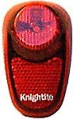
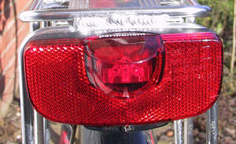

This review makes no attempt to be complete. It only compares and contrasts the tail lights and low-power headlights I have used.
If you are using battery-powered headlights, always use either NiCad rechargeable batteries or alkaline batteries. If you try to use cheap zinc-carbon batteries, they will die almost immediately. This is because even dim battery-powered lights require a fair bit of current (half a watt or more), and zinc-carbon batteries are simply incapable of putting out that much current. Alkalines, although more expensive, will last much longer (that is, they will come near the battery run time on the box the light came in). NiCad cells are also a good option, as their ability to supply high currents is excellent. They generally won't be able to power a light for as long as alkalines, but since they can be recharged many times, they are a good idea as long as you don't need one charge to last a long time.
Cheap zinc-carbon batteries are OK for LED tail lights, since they consume very small currents.
Note that below I recommend some German products by a company called Busch & Mueller (B&M). These can be difficult to find. In the US you can buy them from Peter White Cycles. If you're in the UK you're actually best off ordering them directly from Germany via Bicycles online. It will almost assuredly end up cheaper than buying them from any UK company.
This section reviews some battery-powered LED tail lights. If you're not using a dynamo-powered tail light, they are by far the most sensible lights: incandescent lights are too large and heavy, and they use battery power too fast. It used to be that in Britain, you had to choose between having a sensible LED tail light, and being legal. Not so any longer, as there are some very nice British Standard LED lights available.
Even if you have a dynamo, you might consider using an LED light as well. Most dynamo lights go out when you stop, and it is good to have a light on at all times. You can avoid the problem by getting a dynamo taillight with a built-in standlight, such as the B&M Seculite Plus. A standlight is an LED powered by a capacitor which is charged up as you ride. The LED stays lit for a few minutes after you stop.
If you don't have a standlight, it would be a good idea to add an LED light that's constantly on. If you take this approach, you might consider not using your dynamo-powered rear light at all: put a 3W bulb in your front light, and let all the current generated by the dynamo go to your front light. You'll get a brighter front light, and the LED rear lights will work just fine to let you be seen from behind.
Blinking or non-blinking? Some people argue that having a flashing LED light will attract more attention than a steady one. This is probably true. It is also generally the case that if your light has flashing and steady modes, the batteries will last longer in flashing mode. However flashing lights have several disadvantages. First and most importantly, it is very difficult for other road users to estimate your speed and distance if you have only flashing lights. Second, flashing lights are much more irritating than steady lights. Third, there is a suggestion that a drunk driver might become fixated on your flashing light and be drawn to you! For all these reasons, I use my LED lights in steady mode only. If you think that the possibility of being noticed better makes it desirable to have a flashing light, please use it in conjunction with a steady light, so motorists can figure out how fast you're going, and how far away you are. As I understand it, it is technically illegal to use a flashing tail light in the UK, but see the paragraph below about legal issues.
British Standard? As far as I can tell, if you have any lights at all, you're very unlikely to be stopped by the police. In my opinion, completely unlit cyclists are far too rarely stopped. Since non-legal LED lights can be excellent in making you seen, the question of legality is only really important if you get into an accident and the other party (usually a motorist) claims it was your fault. If you have illegal lighting, this can be used against you. Actually, the British Standard lights are worth having even if you're completely unconcerned about legality: in order to meet the standard, the BS lights must have a very wide angle of visibility, whereas many non British Standard lights have bad off-axis visibility (i.e., they appear very dim unless you're directly behind the bike). Since the British Standard says that tail lights must be non-flashing, if you want a flashing light, it can't be British Standard.
The lights. My criteria for an LED light is that it should be bright and should have a long battery life (especially important because I use them in steady mode only). If possible, it should have a reflector as part of it: reflectors are at least as useful for safety as rear lights. When I am in a car, it's obvious how effective they are: I see rear reflectors long before I see any rear lights, and the reflectors are much brighter. It's also nice if the light has a variety of mounting options.
First, I'll discuss non-British Standard lights.
One of my favorites is the VistaLite Super Nebula. It has 5 LEDs, all in a row, all pointing straight back (when positioned on a bike). It's somewhat bigger than most other ones on the market, which is not a real problem as a red reflector occupies the extra area. It takes AA batteries instead of AAA, and the batteries last a very long time (about 100 hours on steady). It's quite bright from behind but is pretty dim from the side. (This can be fixed by judicious replacement of some of the LEDs, see my LED Upgrades article.) You can mount it in a variety of ways (clip to a seat pack, fasten to a reflector bracket, put on seat post). And it's reasonably cheap, about $15 (£8). The major problem with it is that if you have it mounted to your seatpost, it doesn't go on and off quickly: you have to twist a thumbscrew to take the entire light and bracket off. If you can attach it to a reflector bracket or the back of a rack, this is better, since you then need a screwdriver to take it off, and most would-be thieves won't bother, so it's unlikely to be stolen.
The Cateye LD-500 is a good alternative to the VistaLite Super Nebula. It has 5 LEDs and uses two AAA batteries, giving it a runtime of about 40 hours on steady. The main plus over the VistaLite Super Nebula is that it has a British Standard reflector incorporated into the lens. The VistaLite has a reflector too, but according to Cateye test data the VistaLite's reflector doesn't work as well. The main drawbacks are the much shorter runtime, and the fact that it isn't as bright (it uses smaller, dimmer LEDs). It can be mounted on a seatpost or reflector brackets or clipped to a belt. When mounted on the seat post it can be quickly removed, so you can take it with you to avoid theft.
All of the following tail lights should be considered only as possible alternatives, or maybe supplements to the lights above. They have a shorter run time, and they don't have reflectors.
The VistaLite Total Eclipse is even brighter than the VistaLite Super Nebula rear light, having 7 bright LEDs. It's also very small and has the advantage that you can mount it on a seatstay. You can also take it off and put it on very quickly if you park your bike in a public place. But it uses 2 AAA batteries, and the batteries last a very short time: 25 hours on steady. In addition, it's a bit of a pain to change the batteries, since you need a very small Phillips-head screwdriver to take off the lens (at least you did for the one I had). Thus I can recommend it only if you're planning to use it in flashing mode, and therefore as a secondary light only (in conjunction with a steady LED light).
Another option (mainly useful for a supplemental LED light) is any 3-LED light powered by AAAs. They are not very bright, but they have acceptably long battery life to be left on at all times, and the extra light can't hurt.
Now for a couple of British Standard lights.
The Cateye TL-AU100 is a British Standard light (and so it doesn't flash). I haven't seen it or anything like it mentioned in any US-based mail order catalogs, although someone in the US says he's seen it in a shop. It has 6 LEDs, one huge one pointing back, four normal sized ones (2 pointing back, 2 pointing to the sides, each with a transparent cylinder in front of it to diffuse the light over a wider area) and one little one pointing right up (why? I have no idea). From the rear, it is about as bright as the VistaLite 300X, but it's very visible from almost all angles because of the LEDs pointing in all directions. It is powered by a AA batteries. Unfortunately, it puts out so much light in all directions that its run time is similar to tail lights powered by AAAs (about 40 hours). The Cateye comes with a seat post clip tht fits standard sized seatposts and can be mounted to a reflector bracket (or a VistaLite Super Nebula bracket, for that matter) if you like. It's about £14.
Knightlite makes an excellent British Standard light, the Konstant. It is very compact and light. It has a reflector in the lower part of it, and the upper part is occupied by one big LED with a clear plastic cone on top of it, which spreads out the light evenly over a wide angle. Despite only having one LED, it's very bright, about as bright from behind as the as the VistaLite Super Nebula or the Cateye TL-AU100. It takes 2 AAA cells, which give it a longer run time than the 2 AAs of the Cateye TL-AU100. It has excellent side visibility, although not quite as good as the Cateye TL-AU100. If you're into small and light and don't mind changing the batteries every now and then, it's a superb light. It has a couple of flashing modes, but it conforms to the British Standard only in steady mode only. The light comes with a seatpost clip that resembles a plastic version of a pipe clamp: it will adjust to any size seatpost and will even work on a seatstay. The Knightlite is about £11. It is currently my favorite rear light.
The rear light I use on my commuting bike is a B&M DToplight Permanent. This light isn't technically a British Standard light; it's a German Standard light. The law says that if you use a light here (in the UK) that's accepted by some European Standard, it's legal to use here. The comments I have for British Standard lights also hold for European Standard lights: they are worth getting even if you're unconcerned by legality, as they have a much wider angle of visibiity than the non-(Britsh or European) standard lights. The DToplight attaches to the back of your rack. That is pretty much the only place they will attach to, and in fact they won't fit all racks. They are attached by two bolts horizontally in line with each other. You can get versions of the light with 5 or 8cm between the bolts, thus you need to have a plate on the back of your rack that has holes 5 or 8cm apart. Happily, this is easy to find: the Topeak Super Tourist (a very fine rack BTW) has this sort of mounting plate, as do a couple of cheaper Nimrod racks. The DToplight has two LEDs angled outwards, with little clear plastic bits over them to spread out the beam further left & right. The result is a light that's bright (although not astonishingly bright) from behind, but is extremely visible from the side. It also comes built into a very large red reflector, further increasing your visibility. As it takes 2 AA batteries run time is pretty good, but it doesn't seem to last as long on a set of batteries as the VistaLite Super Nebula.
More bike and light articlesHere your choice should be an incandescent lamp, preferably with a halogen bulb, or a light with white LEDs. LED front lights with yellow, green, or orange LEDs are nearly useless, as they are far dimmer and less visible than lights with an incandescent bulb or white LEDs. White LED front lights come in two flavors. There are small ones shaped like red LED tail lights, that take 2 AAA cells, and there are a few made by Cateye (including the Cateye HL-EL100 that I own), which have three or more very bright white LEDs and take 4 AA batteries. The former are good as backup lights (see below), but the bigger Cateyes are a real alternative to incandescent headlights. (I have a separate article on the smaller white LED front lights them so won't mention them here.)
A dynamo-powered front light is a fine option, but if you don't have a standlight (an LED built into the lamp powered by a capacitor) you should be very wary of where you are when you stop. Since your light goes out when you stop, you are much less visible from the front when stopped. If it is feasible, get off the road as soon as you can. If it is not (for example, you're turning right) be very vigilant. In fact it might be a good idea to carry along a weak battery powered light to turn on for these times. This is a situation where one of the smaller white LED front lights are useful.
My favorite low-power front light (for commuting in lit areas) is the Cateye HL500II Micro Halogen Headlight. It's nicely bright and very small. The only drawback is that the batteries (4 AAs) only last about 3 hours, so you have to replace them too quickly for my tastes. You used to be able to buy an external battery pack for this, but I don't think it's available any more.
If you want something that lasts longer on batteries than the Cateye Micro Halogen, get a Cateye HL500, the one that takes two C cells. It is much less bright than the Micro Halogen, but the batteries last about 8 hours, and it only takes two of them, so battery costs are much lower. But I find that after getting used to higher-powered headlights, I no longer feel very comfortable with the Cateye HL500 as a headlight.
The new larger (the size of the Micro Halogen or even larger) white-LED Cateye lamps are a good solution when your main aims are to be seen rather than to see where you are going. They are extremely visible. The blueish tint of the LEDs really attracts attention and helps you to get noticed. They have limited ability to show you where you are going: they light up the ground in front of you well enough to be your only light in pitch black areas only if you're willing to ride fairly slowly. They have a very long run time: for the HL-EL100 about 60 hours of very bright light followed by another 60 hours of dimmer light. They are very good bike lights for urban use (where there are streetlights to light up the ground).
Note that for battery-powered headlights I only suggest Cateye lamps. There is a good reason for this: I think they are by far the best, and are also reasonably priced.
For commuting I have a Shimano hub dynamo powering a front lamp only, and a B&M DToplight augmented by several reflectors. I don't have a backup front light for commuting, since I only stop at traffic lights in very well-lit areas. There the flouro yellow jacket I wear is sufficient to keep me visible. When I go riding on dark country roads, I carry a 12W battery-powered light as well, which I have turned on most of the time.